Portfolio
Our work speaks for itself. At Aurum Landscapes, we have transformed some of the most exquisite country homes and estates in the Cotswolds into breathtaking outdoor sanctuaries. Each project is a testament to our craftsmanship, attention to detail, and passion for creating truly extraordinary landscapes.
Featured Projects
Explore a curated selection of our finest work, from timeless English gardens to cutting-edge contemporary outdoor spaces. Each project is designed with the highest level of artistry and precision, ensuring a seamless blend of natural beauty and architectural elegance.
The Manor Retreat
– A harmonious fusion of formal gardens, topiary-lined pathways, and a sculpted water feature.
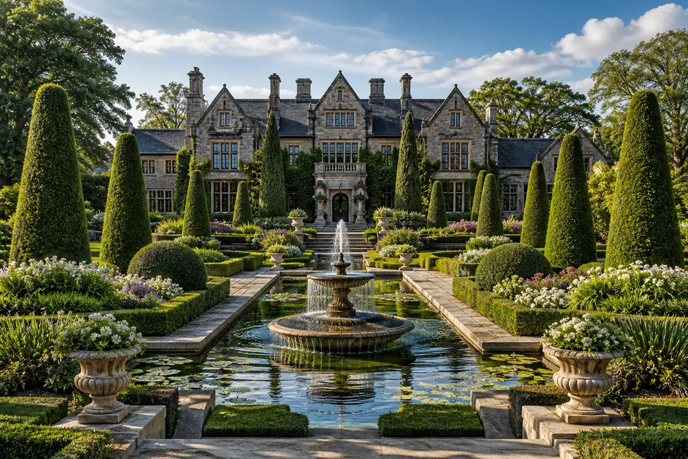
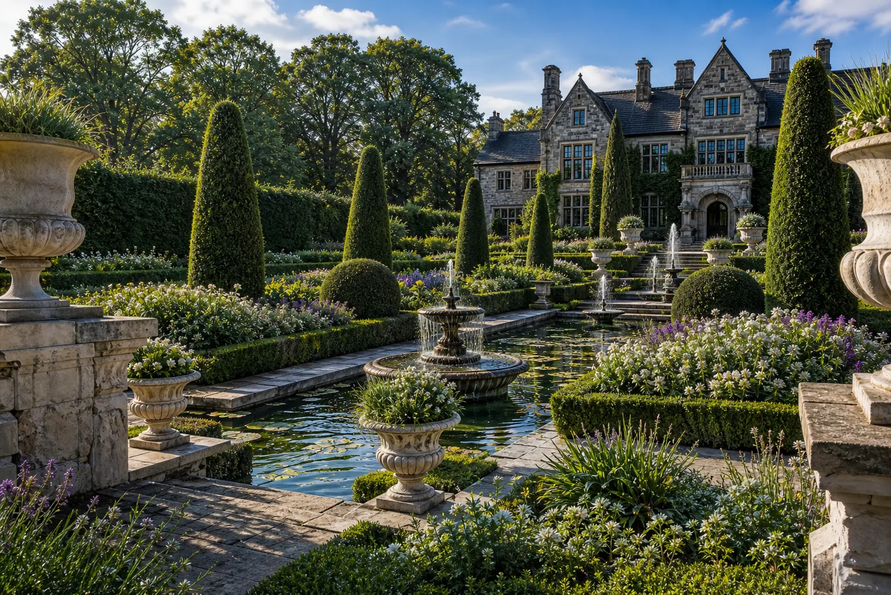
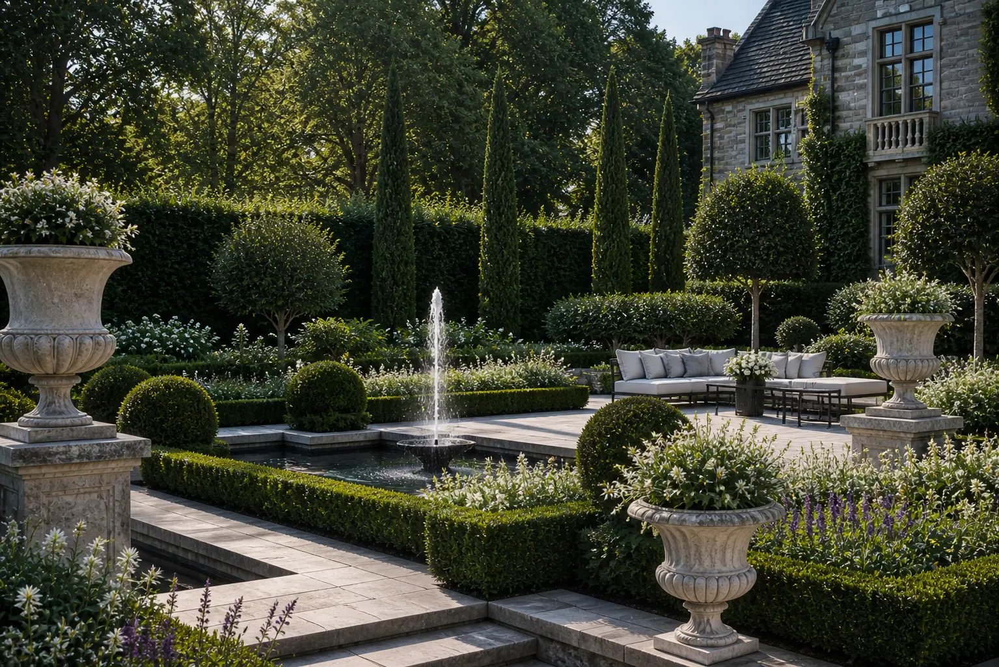
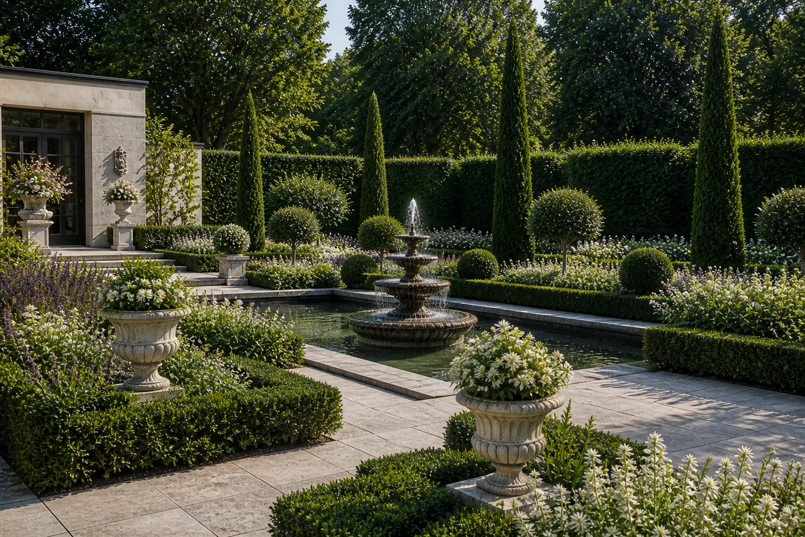
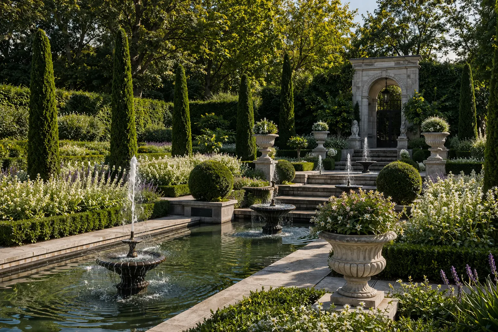
The Modern Estate
– A contemporary garden with minimalist stonework, infinity pool, and atmospheric outdoor lighting.
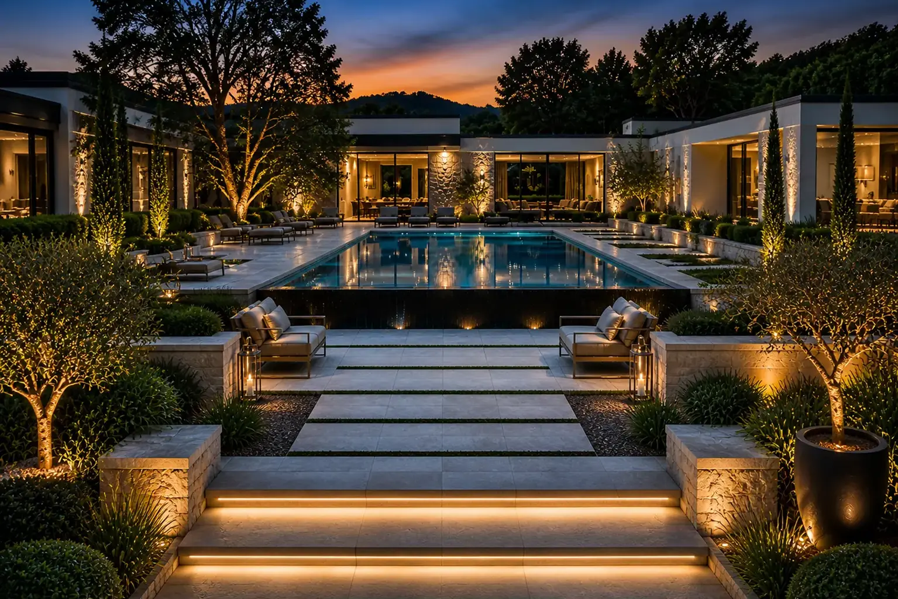
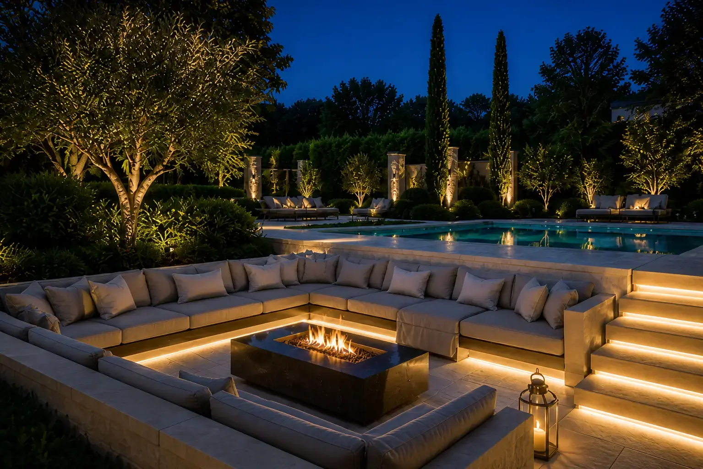
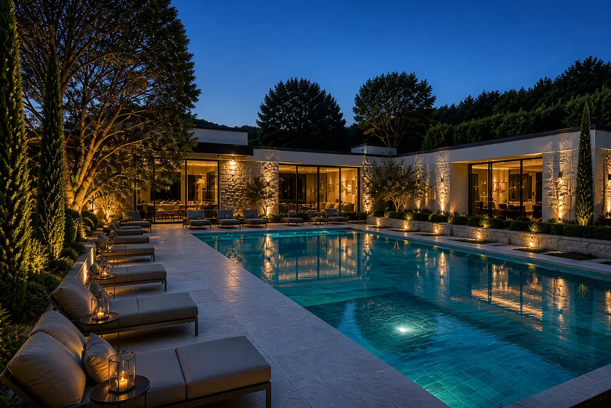
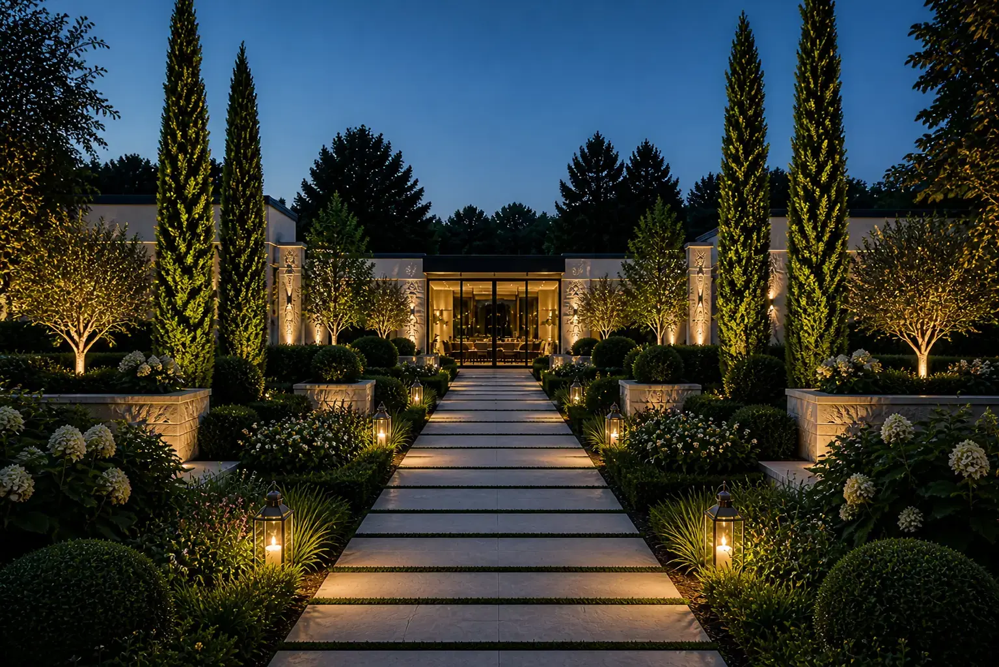
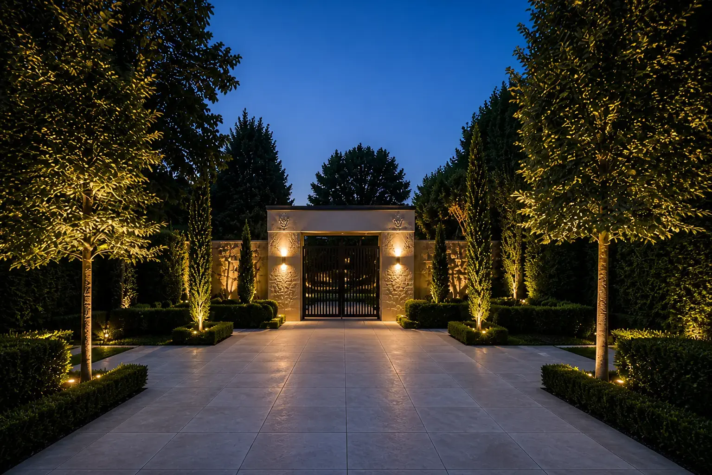
Historic Restoration
– A meticulous revival of a 19th-century walled garden with heritage planting schemes and bespoke ironwork.
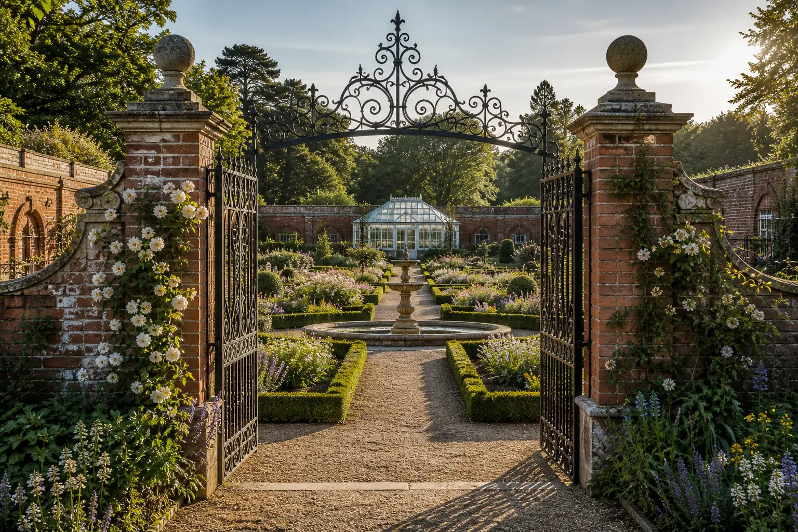
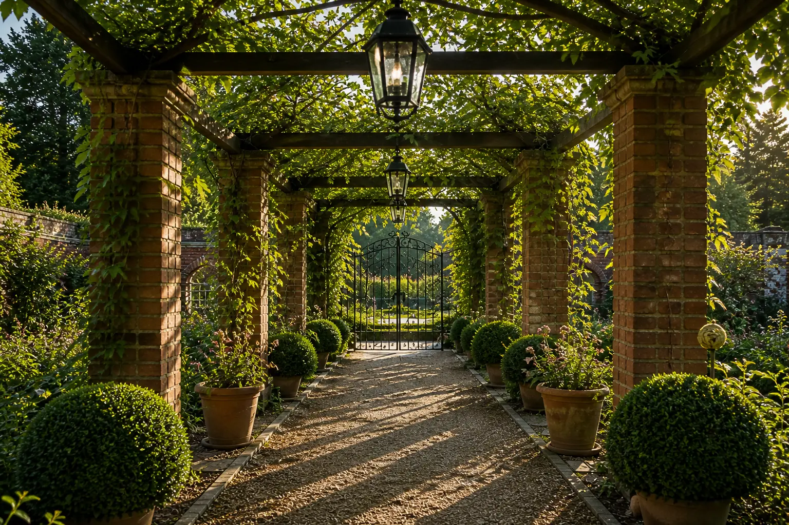
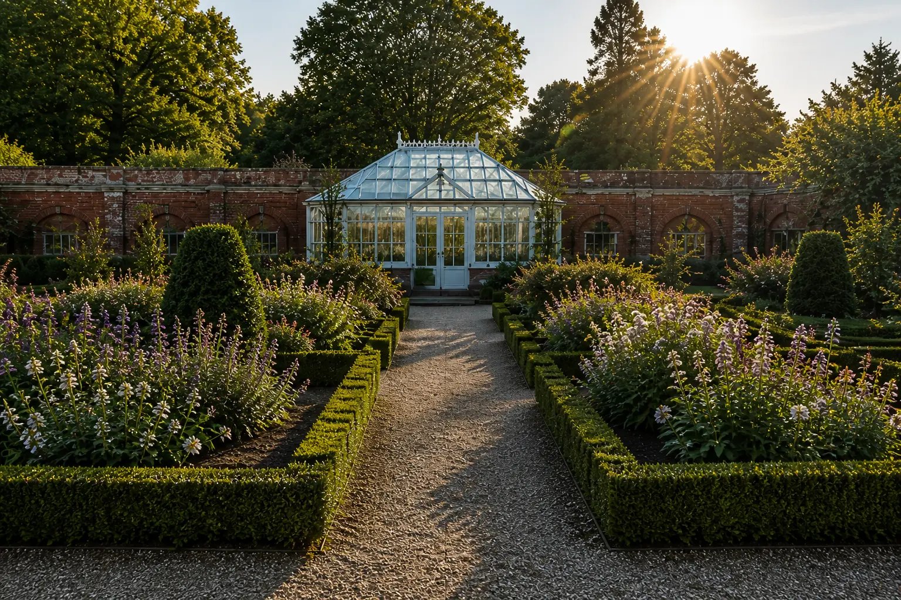
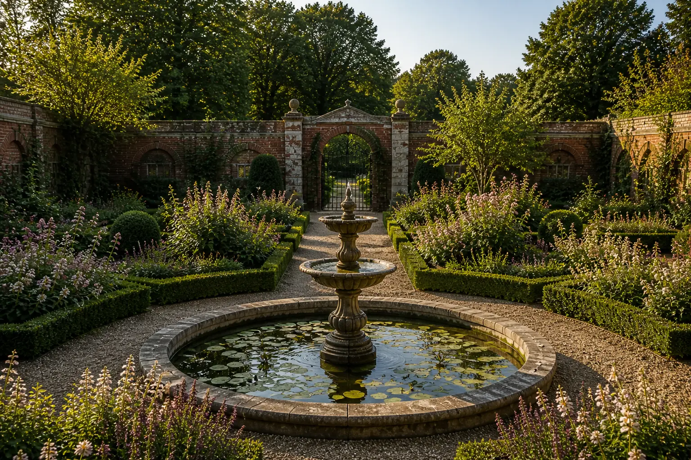
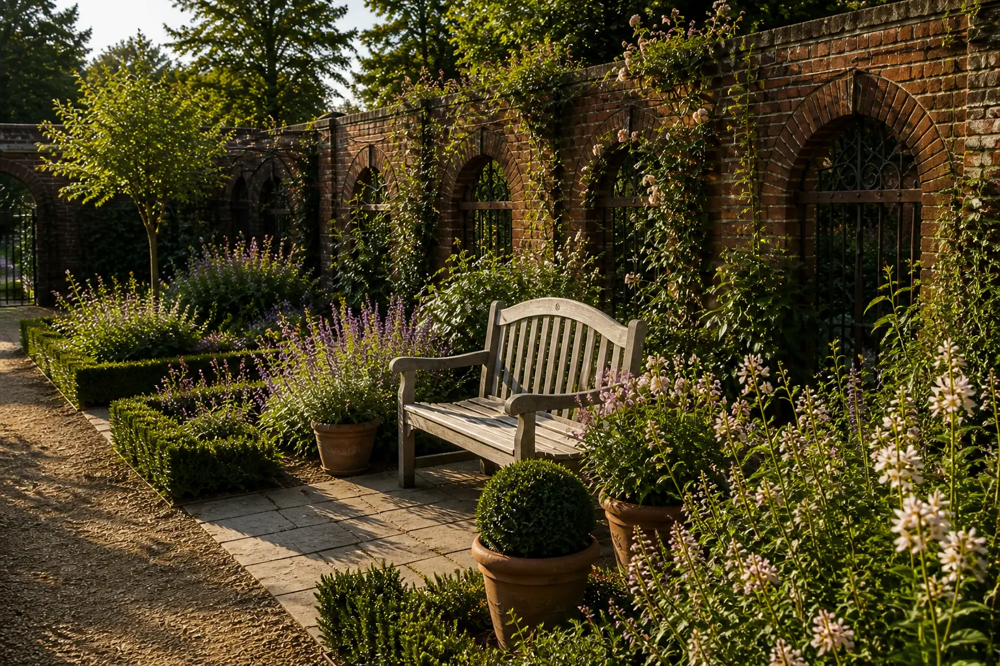
Before & After Transformations
See how we have reimagined and revitalized existing landscapes, turning ordinary spaces into magnificent outdoor environments.
Client Testimonials
Our discerning clientele entrust us with their most valuable estates. Here’s what they say about our work:
We invite you to explore our portfolio and be inspired.